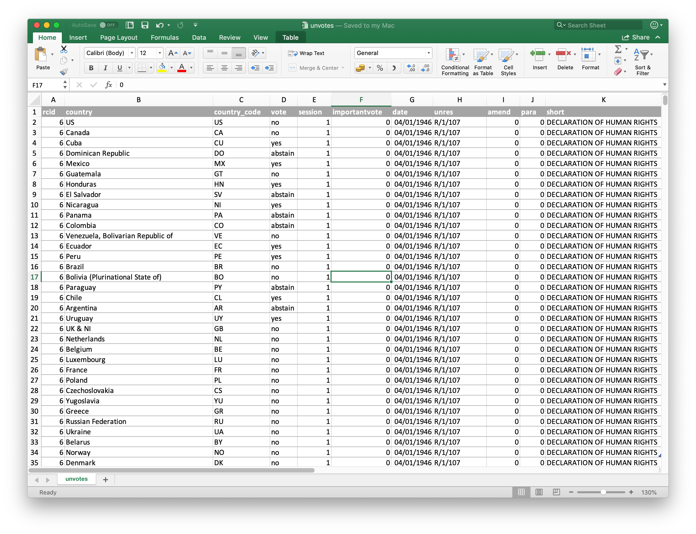
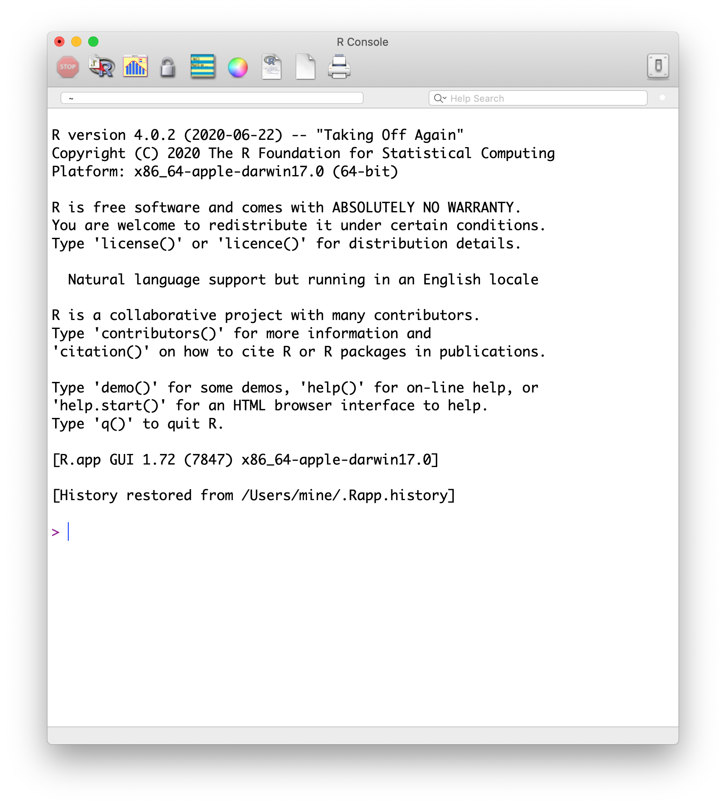

Agenda
- Introductions to one another
- A brief introduction to data science
- First activity: Visualizing data in RStudio!
- Discussion of the syllabus
- Check-out
class: inverse, center, middle
Introductions (to one another)
#whoami
.pull-left[
* Alex Lishinski, Ph.D. (they/them)
* Contact:
* alishins@utk.edu
* Postdoctoral researcher, CS Education, University of Tennessee, Knoxville
* Primary areas of interest:
* Computer Science education
* Quantitative research methods
* Data science in education
* Former philosopher]
Introductions!
- Stuff about you
- Why are you interested in data science?
- What tools/experiences do you have for doing data science?
- What do you think you want to get out of this course?
(10 minutes)
Course FAQ
.pull-left-wide[
Q - What data science background does this course assume?
A - None.
Q - Is this an intro stat course?
A - While statistics \(\ne\) data science, they are very closely related and have tremendous of overlap. Hence, this course is a great way to get started with statistics. However this course is not your typical high school statistics course.
Q - Will we be doing computing?
A - Yes.
]
Course FAQ
.pull-left-wide[
Q - Is this an intro CS course?
A - No, but many themes are shared.
Q - What computing language will we learn?
A - R.
Q: Why not language X?
A: We can discuss that over coffee.
]




## # A tibble: 5 × 2
## date season
## <chr> <chr>
## 1 23 January 2017 winter
## 2 4 March 2017 spring
## 3 14 June 2017 summer
## 4 1 September 2017 fall
## 5 ... ...
]


Over-arching design
The pedagogical framework plays out in the following specific ways:
- You’ll first hear about the concepts underlying what you can do
- You’ll see examples of working out these ideas in practice
- You’ll try these ideas out on your own
An argument for this class
This presentation will make the argument that you can use R and RStudio to solve
problems that are important to you
In doing so, you can participate in a cool community of data scientists in education
Why learn R?
- It is capable of carrying out basic and complex statistical analyses
- It is able to work with data small (n = 30) and large (n = 100,000+) efficiently
- It is a programming language and so is quite flexible
- There is a great, inclusive community of users and developers (and teachers)
- It is increasingly used in education
- It can help you to carry out your educational analyses in open and trustworthy ways
- It is cross-platform, open-source, and freely-available
RMarkdown
- RMarkdown is a data analysis “notebook” that combines text with code and output
- It is a great file type to use when beginning to use R and to create reproducible analyses
- It is fun to use because you can generate different types of output (Word, PDF, and even web-based)
Let’s look at a bit of code together
What do you think this code will do?
sci_mo_processed %>%
filter(percentage_earned >= .60) %>%
select(student_id, course_id, percentage_earned))
Let’s look at a bit of code together
sci_mo_processed %>%
filter(percentage_earned >= .60) %>%
select(student_id, course_id, percentage_earned)
## # A tibble: 563 × 3
## student_id course_id percentage_earned
## <dbl> <chr> <dbl>
## 1 43146 FrScA-S216-02 0.677
## 2 44638 OcnA-S116-01 0.757
## 3 47448 FrScA-S216-01 0.661
## 4 47979 OcnA-S216-01 0.677
## 5 48797 PhysA-S116-01 0.865
## 6 51943 FrScA-S216-03 0.855
## 7 52446 PhysA-S116-01 0.824
## 8 53447 FrScA-S116-01 0.676
## 9 53475 FrScA-S116-02 0.820
## 10 53475 FrScA-S216-01 0.808
## # … with 553 more rows
Let’s look at a bit of code together
What do you think this code will do?
sci_mo_processed %>%
filter(percentage_earned >= .60) %>%
arrange(desc(percentage_earned)) %>%
select(student_id, course_id, percentage_earned, TimeSpent)
Let’s look at a bit of code together
sci_mo_processed %>%
filter(percentage_earned >= .60) %>%
select(student_id, course_id, percentage_earned, TimeSpent)
## # A tibble: 563 × 4
## student_id course_id percentage_earned TimeSpent
## <dbl> <chr> <dbl> <dbl>
## 1 43146 FrScA-S216-02 0.677 1555.
## 2 44638 OcnA-S116-01 0.757 1383.
## 3 47448 FrScA-S216-01 0.661 860.
## 4 47979 OcnA-S216-01 0.677 1599.
## 5 48797 PhysA-S116-01 0.865 1482.
## 6 51943 FrScA-S216-03 0.855 3.45
## 7 52446 PhysA-S116-01 0.824 1390.
## 8 53447 FrScA-S116-01 0.676 1479.
## 9 53475 FrScA-S116-02 0.820 NA
## 10 53475 FrScA-S216-01 0.808 1867.
## # … with 553 more rows
class: inverse, center, middle
Part 3/5: Tutorial
First in-class tutorial: Data viz!
class: inverse, center, middle
Syllabus
Assignments
- Homework
- Exams
- Final Project
- Others (data ethics, data science resources)
Organization of the class
class: inverse, center, middle